Redes Auto-organizadas SONAr/IBSM:
Especificação de propriedades de Self-Configuration
Roteiro
1 - Introdução
2 - Fundamentação Teórica e Contextualização da Pesquisa
3 - Método de Pesquisa
4 - Apresentação do modelo IBSM, Visão Geral da Arquitetura SONAr, e Especificação de uma Solução de Auto-Configuração
5 - Aspectos de Projeto e Implementação
6 - Experimentos e Análise dos Resultados
7 - Conclusão e Perspectivas Futuras
1 - Introdução
As aplicações da rede mudaram.


|
O número de nós na redes cresceu e novos requisitos surgiram.
| 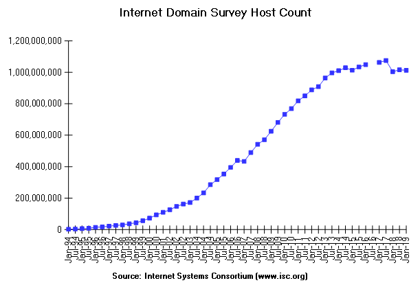 |
Gerenciamento de Rede e Computação Autônoma

|
Motivações e Justificativas
O Gerenciamento de Rede é fundamental para manter a rede operacional;
As Redes Atuais são sistemas complexos;
As Redes Futuras não poderão ser gerenciadas com as técnicas atuais;
A Computação Autônoma pode ser utilizada para lidar com essa complexidade;
A automação do gerenciamento reduz o OPEX, melhora o QoS e viabiliza novas aplicações;
Não há solução formal de Self-Management para as redes de computadores; e,
SDN e NFV viabilizam soluções nos planos de controle e de dados de maneira mais simples.
Hipótese
Assume-se que a provisão da propriedade de auto-configuração é fundamental para a viabilização das redes modernas pois flexibiliza a implantação de comportamentos na rede, torna o aprovisionamento de serviços mais dinâmico e diminui a complexidade das operações de inicialização e extensão da infraestrutura.
Objetivos
Especificar a arquitetura de uma plataforma de gerência para redes auto-organizáveis com foco nas operações de inicialização da rede, no plug-and-play de dispositivos e no aprovisionamento de serviços. Para isso é necessário:
Projetar uma solução de gerenciamento capaz de iniciar a rede e de suportar mudanças de contexto tais como novos dispositivos e crescimento de utilização;
Definir mecanismos para representação e aprovisionamento de serviços comunicacionais, tais como os necessários para VR/AR e Telepresença, com alto nível de abstração; e,
Desenvolver um protótipo com base na solução proposta com foco nas operações de inicialização, plug-and-play de dispositivos e aprovisionamento de serviços.
2 - Fundamentação Teórica e Contextualização da Pesquisa
As redes de computadores e de telecomunicações moldaram as organizações empresariais e a própria sociedade que se tornaram dependentes destes serviços;
O Gerenciamento de Rede é um mecanismo fundamental para manter a rede funcionando e prover serviços de comunicação em níveis e requisitos mínimos; e,
O gerenciamento de rede ajuda a manter custos sob controle, otimiza a utilização de recursos de rede, melhora a qualidade de serviços e aumenta o retorno sobre o investimento.
Gerenciamento de Rede
O Gerenciamento de Rede é:
Segundo Hegering: "o conjunto de medidas que garantem a eficiência e efetividade das operações de sistema conectados e recurso de rede em harmonia com objetivos corporativos".
Segundo Clemm: "o conjunto de técnicas, ferramentas e procedimentos utilizados nas atividades de operação, administração, manutenção e aprovisionamento de sistemas conectados em rede".
Segundo Subramanian: "o conjunto de processos responsáveis pela operação, administração, manutenção e aprovisionamento da rede.".
Padrões de Gerenciamento de Rede
FCAPS : especifica mecanismos para monitoramento, controle e coordenação de sistemas conectados dividido em cinco áreas funcionais (Fault, Configuration, Accounting, Performance e Security);
TMN : especificação que abrange diversos aspectos relacionados a redes de telecomunicações, passando pelas áreas de planejamento, implantação, operação e administração através de quatro camadas lógicas (Business, Service, Network e Element) e uma física (Network Element);
OAM&P : especifica o gerenciamento de rede baseado em quatro funções (Operations, Administration, Maintenance e Provisioning); e,
FAB : define o ciclo de vida de gerenciamento em três estágios (Fulfillment, Assurance e Billing).
Gerenciamento de Redes Futuras
Volume de dados móveis 1000 vezes mais alto por área geográfica;
10 a 100 vezes mais dispositivos conectados;
Taxa de dados típica de usuário 10 a 100 vezes mais alta;
Consumo de energia 10 vezes menor;
Latência de ponta a ponta menor que 1ms; e,
Acesso 5G onipresente, inclusive em áreas de baixa densidade.
O 5G introduz grandes desafios:
Gerenciamento de Redes Futuras
A Internet das Coisas pode aumentar de maneira dramática a quantidade de nós conectados;
Content Delivery Network requer requisitos de baixa latência e maior flexibilidade para otimização de conteúdo;
A Edge Computing depende do aprovisionamento automático de aplicações na borda da rede; e,
SDN e NFV introduzem novos elementos passíveis de falhas.
Computação Autônoma
deve ser capaz de se configurar (e reconfigurar) diante mudanças de contexto programadas ou aleatórias;
deve sempre procurar maneiras de otimizar o seu comportamento;
deve ser capaz de se recuperar de eventos rotineiros ou extraordinários que possam causar o seu mau funcionamento; e,
deve resistir a ameaças externas e impedir o uso indevido.
Características de um Sistema Autônomo:
manual - todas as tarefas são realizadas por administradores;
gerenciado - administradores utilizam ferramentas para a realização de atividades específicas;
preditivo - o sistema é capaz de analisar dados e recomendar alterações para administradores;
adaptativo - o sistema é capaz de se gerenciar, mas ainda precisa dos administradores no tratamento de situações mais complexas; e,
autônomo - o sistema é completamente capaz de se gerenciar com base em políticas definidas por administradores.
Níveis de Automação:
4 Principais Fundamentos de Computação Autônoma
self-configuration:
adaptam-se automaticamente a ambientes dinâmicos,
têm a capacidade de definir o seu comportamento em tempo de execução, e,
permitem a extensão de funcionalidades e sua distribuição sem intervenção humana;
self-healing:
monitoram, diagnosticam e corrigem falhas,
predizem problemas e tomam decisões preventivas para evitar falhas, e
são resilientes a falhas e se mantêm sempre disponíveis;
self-optimization:
monitoram e ajustam recursos de maneira automática,
permitem a alocação, balanceamento de recursos sem intervenção humana, e
analisam a utilização e tomam medidas para evitar o desperdício de recursos;
self-protection:
antecipam,detectam e se protegem de ataques,
aplicam técnicas para autorização de acesso a recursos e identificação de intrusos, e
identificam falhas de segurança e aplicam correções/atualizações de forma automática.
Outros Fundamentos de Computação Autônoma
self-planning:
predizem cenários futuros através de uma análise de probabilidade,
programam intervenções de acordo com a necessidade, e
auxiliam no planejamento de extensão de recursos;
self-orchestration:
definem os seus fluxos de execução de maneira dinâmica,
interpretam cenários e decidem sobre as melhores abordagens, e
priorizam componentes e funcionalidades de acordo com o contexto;
self-awareness:
têm uma noção fiel a respeito do seu atual estado,
permitem a extração de dados e realização de testes em seus componentes, e
monitoram e registram informações referentes às suas utilizações;
self-learning:
aprendem com diagnósticos e tratativas anteriores,
analisam cenários, correlacionam dados e preveem mudanças, e
interpretam requisitos de alto nível e traduzem em ações práticas.
Redes Auto-Organizadas
SON - Self-Organizing Network - 3GPP:
Automação das tarefas de planejamento, configuração, gerenciamento, otimização e cura de Redes de Telecomunicações;
Plano de Sinalização separado do plano de Dados;
A função de Auto-Estabelecimento tem a função de alocar automaticamente novos recursos de rede (uma eNodeB por exemplo).
SDN2 - Self-Driving Network - Juniper:
Estratégia de gerenciamento “zero touch” fornecida por meio da automação de processos de operação e administração de redes;
Propõe redes autônomas através de técnicas como aprendizado de máquina, automação de processos, intenções declarativa, telemetria e big data .
IBN - Intent Based Network - CISCO:
É um paradigma para automação de rede que propõe o uso de intenções declarativas para guiar o comportamento da rede;
Descreve “qual” o comportamento esperado da rede e não “como” a rede deve agir para garantir este comportamento.
Auto-Configuração
Inicialização da rede (Bootstrapping): infraestrutura e componentes de controle/gerenciamento;
Plug-and-Play de recursos (servidores, switches e componentes);
Aprovisionamento de Serviços
Tecnologias Habilitadoras
Software-Defined Networking
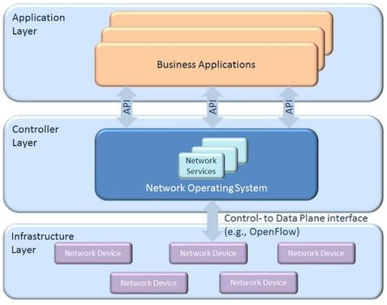Fonte: https://www.opennetworking.org/
Tecnologias Habilitadoras
Networks Functions Virtualization
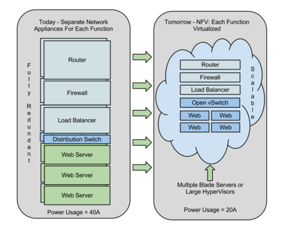Fonte: NFV White Paper
Estado da Arte
Autonomic Network Management - Tsagkaris et al. (2015): aplica computação autônoma e a técnica de Autonomic Control Loop (ACL) no monitoramento, análise e execução de procedimentos na rede;
SELFNET - Neves et al. (2016b): define elementos sensores e atuadores implantados com a missão de executar ações computacionais autônomas (monitoramento e recuperação);
COGNET - Xu et al. (2016a): propõe uma espécie de extensão para o NFV através dos componentes Data Collector, CogNet Smart Engine e Policy Manager
SUPERFLUIDITY - Bianchi et al. (2016): propõe a decomposição de funções e serviços de rede em blocos reutilizáveis implantados na infraestrutura chamados de Reusable Functional Blocks (RFB);
Self-Management
Estado da Arte
Network Management Framework for SDN - Abdallah et al. (2018): propõe um framework para o gerenciamento de redes SDN com funções do FCAPS e introduz um elemento Gerenciador;
Policy-based QoS Management Framework for SDN - Al-Jawad et al. (2018): propõe componentes para monitoramento de dados de acordo com políticas de QoS, e caso uma violação seja detectada, aplica técnicas de adaptação baseadas na reconfiguração de fluxos;
Self-Management de Redes SDN
Estado da Arte
Automatic bootstrapping of OpenFlow networks - Sharma et al. (2013): se baseia em duas etapas: i) atribuição de um endereço/identificador para o dispositivo e, ii) estabelecimento da sessão OpenFlow entre o dispositivo e o controlador;
InitSDN - Patil, Gokhale e Hakiri (2015): define uma arquitetura com componentes para inicialização de redes SDN, como: Network Discovery & Topology Service, Network Hypervisor, e Control Plane Synchronization;
Auto-Configuration of SDN Switches in SDN/Non-SDN Hybrid Network - Katiyar et al. (2015) : define processos e componentes capazes de estabelecer fluxo de controle e conectividade em redes híbridas.
Self-Configuration
3 - Método da Pesquisa
Abordagem da Pesquisa:
Natureza Aplicada;
Objetivo Exploratório; e,
Abordagen Mista.
Natureza Aplicada;
Objetivo Exploratório; e,
Abordagen Mista.
Principais Técnicas:
Pesquisa Bibliográfica;
Pesquisa de Entrevista;
Design de Solução;
Especificação Formal;
Estudo de Caso;
Prototipação; e,
Experimentação.
Etapas/Atividades:
1 - Etapa Teórica
a) Definição do Problema de Pesquisa;
b) Estudo sobre Gerenciamento de Rede;
c) Compreensão dos Problemas de Gerenciamento;
d) Levantamento do Estado da Arte.
2. Etapa de Especificação
a) Concepção de Modelos de Gerenciamento;
b) Proposição de Soluções com base nos Modelos;
c) Especificação Funcional e Técnica dos Componentes;
d) Elaboração de Estudo de Caso com foco em Configuração.
3. Etapa de Planejamento
a) Escrita do Projeto de Pesquisa;
b) Planejamento de Atividades;.
Etapas/Atividades:
4. Etapa de Desenvolvimento
a) Construção do Projeto Estruturante;
b) Construção de Protótipo.
5. Etapa de Experimentação
a) Planejamento de Experimentos e Definição de Cenários;
b) Execução de Experimentos e Coleta de Resultados;
c) Análise de Resultados.
6. Etapa de Escrita
a) Escrita de Artigos;
b) Escrita da Tese de Doutorado.
Método de Experimentação
Estratégia
Protótipo de Prova de Conceito.
Cenários
1) Inicialização de uma Rede SDN/OpenFlow;
2) Plug-and-Play de switches OpenFlow:;
3) Aprovisionamento de serviço para comunicação de VoIP.
Resultados
1) Quantitativos: Tempos de Execução en cada Estágio (cenários 1 e 2) e consumo de banda (cenário 3);
2) Qualitativo: Agilidade e segurança (cenários 1 e 2) e garantia da qualidade de serviço (cenário 3).
4 - Apresentação do modelo IBSM, Visão Geral da Arquitetura SONAr, e Especificação de uma Solução de Auto-Configuração
IBSM: Modelo de Representação e Aprovisionamento de Serviços;
SONAr: Arquitetura para a provisão de Redes Auto-Organizadas; e
Self-Configuration: Especificação e implementação de "prova de conceito" para provisão da propriedade de auto-configuração com SONAr e IBSM.
IBSM - Intent-Based Service Model
Qual o tipo de comunicação será realizado e qual a motivação da comunicação?
Como a comunicação deve ser tratada e quais os requisitos da comunicação devem ser contemplados?
A qual comunicação o serviço se aplica e em qual contexto ele deve ser executado?
IBSM-SRM - Service Representation Model
Modelo de Representação de Serviços baseados em três partes lógicas: função, políticas e filtros.
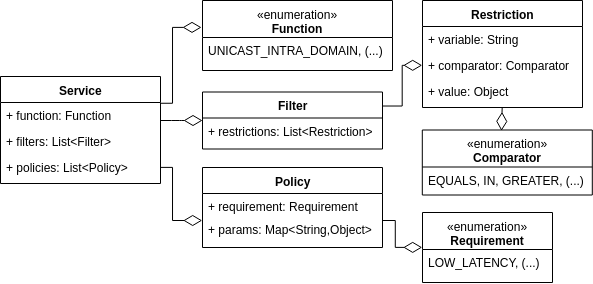
IBSs - Intent-Based Services
Modificadores: Abstratos,Concretos e Finais
Granularidade: Subserviço e Superserviço
Aprovisionamento: Pré-configurados, Sob-demanda e Programados
Representação: Formal (FDS - Formally Described Service), Comportamental (BIS - Behavior Inferred Service) e Natural (NDS - Natural Described Service)
IBSM-SPM - Service Provisioning Model
Etapas de Aprovisionamento
Elementos Conceituais de Aprovisionamento
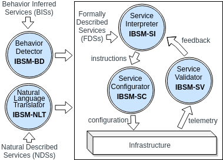Requisitos Comunicacionais
Requisitos Comunicacionais Funcionais |
Classificação por abrangência da comunicação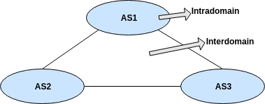 Classificação por tipo de comunicação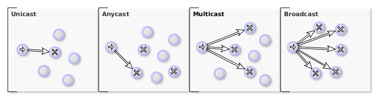 |
Requisitos Comunicacionais
|
|
Requisitos Comunicacionais
Controle de alocação: RNF01, RNF02, RNF03
Controle de uso: RNF04, RNF05, RNF06
Controle de canal: RNF07, RNF08, RNF09, RNF10, RNF11
Controle de acesso: RNF12, RNF13, RNF14, RNF15, RNF16
Classificação de Requisitos Não-Funcionais
SONAr - Self-Organizing Network Architecture
auto-organizadoras: self-configuration, self-healing, self-optimization, self-protection, self-planning e self-orchestration
auto-aprendizado: self-learning
auto-coletoras: self-awareness
Entidades de Self-Management
Fluxo básico de execução das Entidades de Self-Management 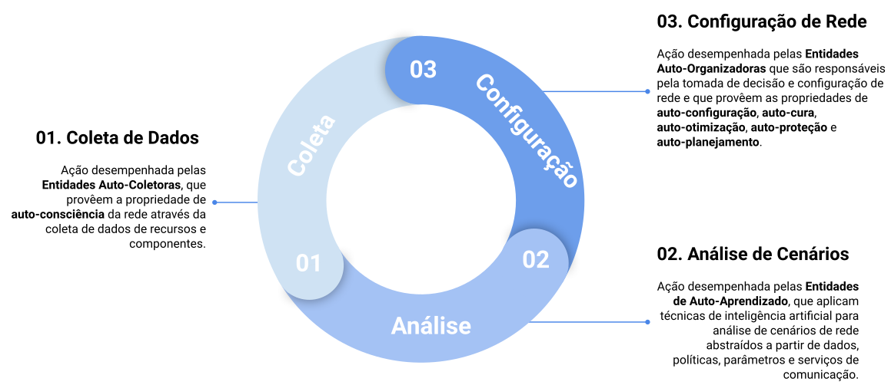
Modelo de Camadas SONAr 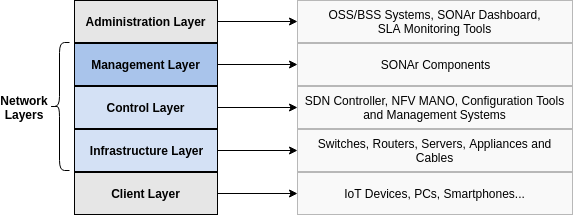
Diagrama de Componentes SONAr 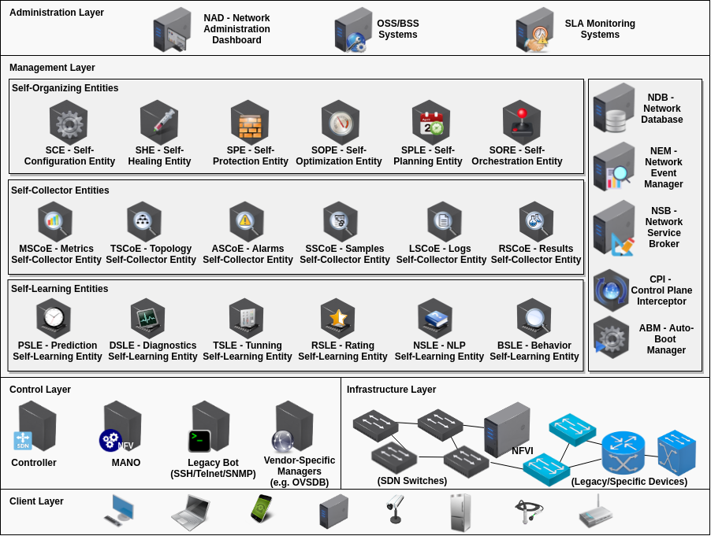
SOEs - Self-Organizing Entities 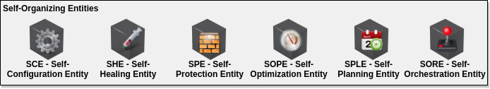
SLEs - Self-Learning Entities

SCoEs - Self-Collecting Entities
Componentes Auxiliares 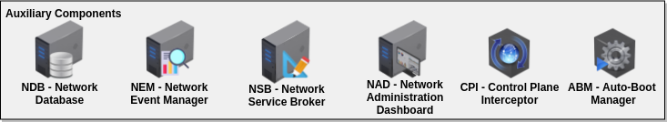
Auto-Configuração através do SONAr/IBSM
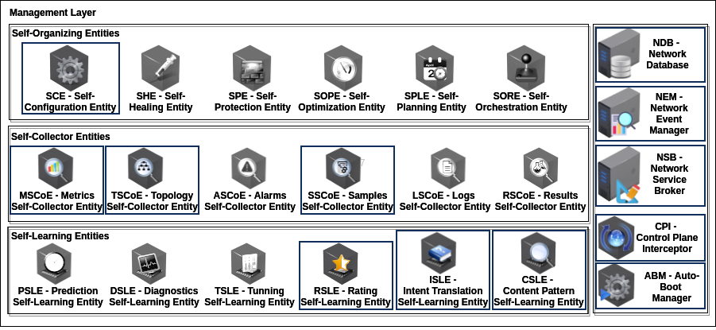1 - Fluxo de Inicialização da Rede
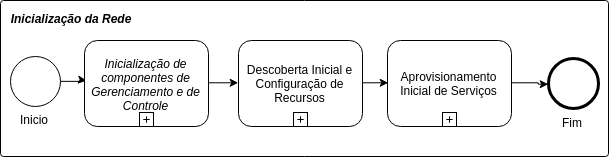1.1 - Fluxo de Inicialização dos Componentes de Gerenciamento e de Controle
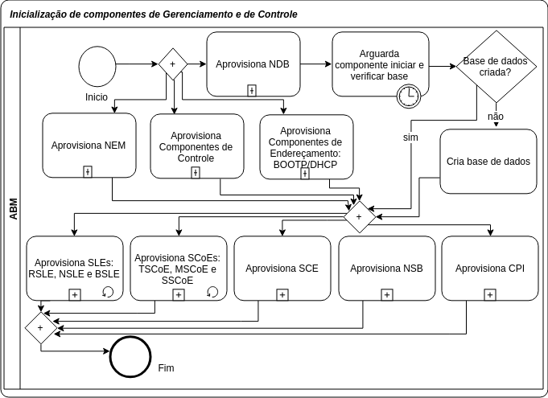1.1.1 - Fluxo de Aprovisionamento de Componentes
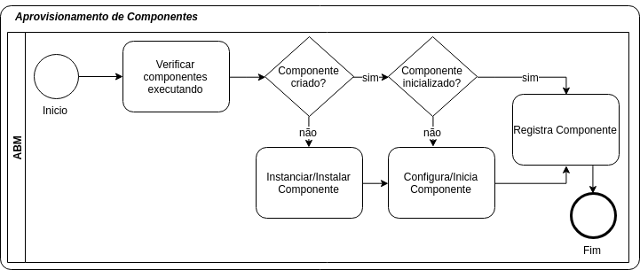1.2 - Fluxo de Descoberta inicial e configuração de recursos
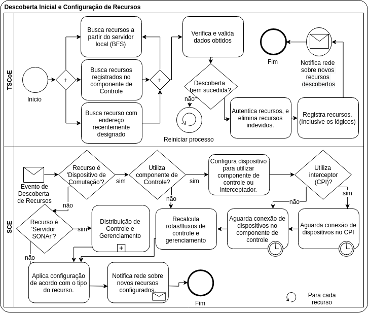1.2.1 - Fluxo de Distribuíção de Controle e Gerenciamento
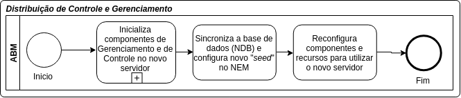1.3 - Fluxo de Aprovisionamento Inicial de Serviços
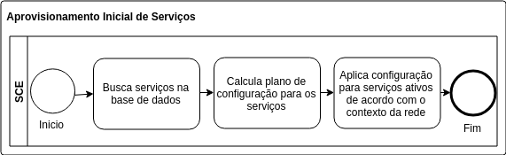2 - Fluxo de Plug-and-Play de Recursos - pt.1
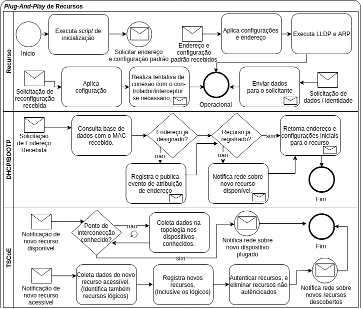2 - Fluxo de Plug-and-Play de Recursos - pt.2
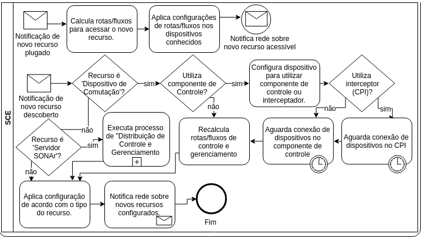3 - Fluxo de Configuração de Serviços
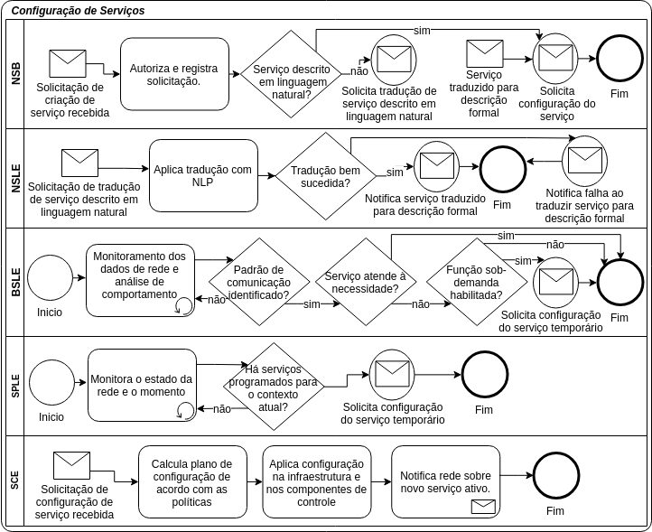5 - Aspectos de Projeto e Implementação do Protótipo
Servidor SONAr
ABM - Auto-Boot Manager.
C-NIM - Containerized Network Infrastructure Manager.
DRCP - Dynamic Resource Configuration Provider.
CP - Container Provider.
RDP - Resource Data Provider.
NDP - Neighbor Discovery Provider.
Componentes SONAr
NDB - Network Database.
NEM - Network Event Manager.
SCE - Self-Configuration Entity.
TSCoE - Topology Self-Collector Entity.
CPI - Control Plane Interceptor.
NSB - Network Service Broker.
Bibliotecas SONAr
NDB Client - Network Database Client API/Broker.
NEM Client - Network Event Manager Client API/Broker.
NIM Client - Network Infrastructure Manager Client API/Broker.
SONAr Model.
SONAr Util.
6 - Experimentos e Análise dos Resultados
Método de Avaliação
Definição de cenários de testes;
Desenvolvimento de protótipos;
Construção de uma infraestrutura de rede simulada;
Realização dos experimentos e coleta de dados; e,
Interpretação e análise dos resultados.
Infraestrutura
Servidor de testes com Ubuntu 18.10, 16GB de RAM, 40GB de HD, 8 núcleos 2GHz;
Rede emulada com GNS3 com um appliance de switch customizado;
Servidor SONAr com Ubuntu Server 16.04, 8194GB de RAM, 22GB de HD, 8 núcleos 2GHz ;
Componentes "conteinerizados" com Docker;
Redes com 1, 2, 4, 8, 16, 32, 64 e 128 switches;
Aplicações de coleta de resultados específicas para cada experimento.
Infraestrutura
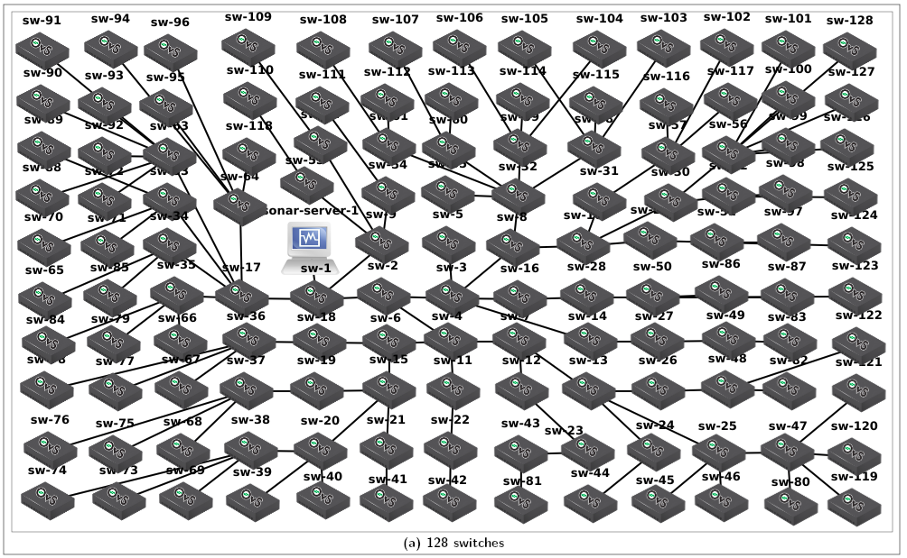Cenário 1: Inicialização de uma Rede SDN/OpenFlow
Experimento 1 - Inicialização - Sem Interceptor - Configuração da Raiz para as Folhas;
Experimento 2 - Inicialização - Sem Interceptor - Configuração das Folhas para a Raiz;
Experimento 3 - Inicialização - Com Interceptor - Configuração das Folhas para a Raiz.
Passo 1 - Criar a topologia de rede através da ferramenta de emulação;
Passo 2 - Iniciar componente de Auto-inicialização da SONAr;
Passo 3 - Executar uma aplicação de coleta de resultados;
Passo 4 - Iniciar todos os elementos de rede da topologia;
Passo 5 - Aguardar a execução da inicialização da rede e coletar os resultados.
Resultados Cenário 1: Inicialização de uma Rede SDN/OpenFlow
Experimento 1 : Inicialização da Rede - Sem Interceptor - Configuração da Raiz para as Folhas.
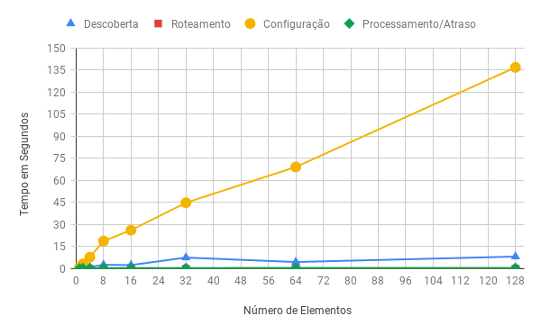Resultados Cenário 1: Inicialização de uma Rede SDN/OpenFlow
Experimento 2 : Inicialização da Rede - Sem Interceptor - Configuração das Folhas para a Raiz.
Resultados Cenário 1: Inicialização de uma Rede SDN/OpenFlow
Comparação entre os Experimentos 1 e 2 : ordem de Configuração.
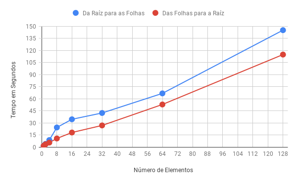Resultados Cenário 1: Inicialização de uma Rede SDN/OpenFlow
Experimento 3 : Inicialização da Rede - Com Interceptor - Configuração das Folhas para a Raiz.
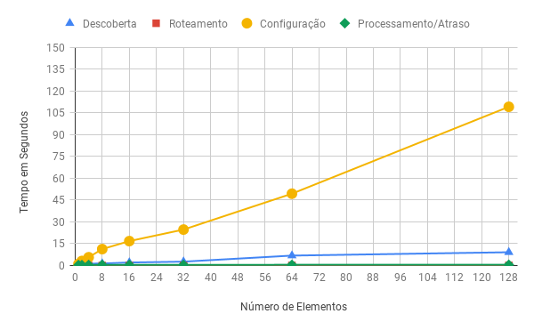Resultados Cenário 1: Inicialização de uma Rede SDN/OpenFlow
Comparação entre os Experimentos 2 e 3 : uso do CPI.
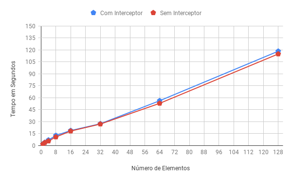Cenário 2: Plug-and-Play de Dispositivos de Comutação
Experimento 1 - Plug-and-Play - Sem Interceptor;
Experimento 2 - Plug-and-Play - Com Interceptor;
Experimento 3 - Plug-and-Play - Com Interceptor - Com "delayed discovery".
Passo 1 - Criar a topologia de rede através da ferramenta de emulação;
Passo 2 - Iniciar componente de Auto-inicialização da SONAr;
Passo 3 - Iniciar todos os elementos de rede da topologia;
Passo 4 - Executar uma aplicação de coleta de resultados;
Passo 5 - Aprovisionar um novo switch na topologia;
Passo 6 - Aguardar a execução do Plug-and-Play e coletar os resultados.
Cenário 2: Plug-and-Play de Dispositivos de Comutação
Experimento 1 - Plug-and-Play - Sem Interceptor.

Cenário 2: Plug-and-Play de Dispositivos de Comutação
Experimento 2 - Plug-and-Play - Com Interceptor.
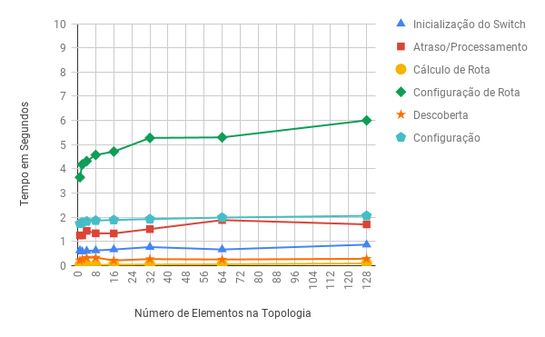Cenário 2: Plug-and-Play de Dispositivos de Comutação
Experimento 3 - Plug-and-Play - Com Interceptor - Com "delayed discovery".
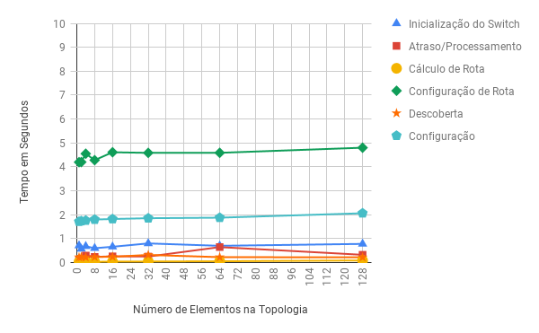Cenário 3: Aprovisionamento de serviço para comunicação de VoIP
Passo 1 - Criar a topologia de rede através da ferramenta de emulação;
Passo 2 - Iniciar componente de Auto-inicialização da SONAr;
Passo 3 - Iniciar todos os elementos de rede da topologia;
Passo 4 - Aprovisionar quatro hosts e ligá-los à topologia;
Passo 5 (exclusivo para a abordagem SONAr) - Aprovisionar um serviço de comunicação via barramento utilizando os IP’s dos Hosts 1 e 3, e com política de garantia de banda de 64Kbps;
Passo 6 - Executar uma aplicação receptora para a comunicação de VoIP no host3 e uma aplicação enviadora no host1 com taxa de 64Kbps por 50 segundos;
Passo 7 (simultaneamente ao Passo 5) - Aguardar 20 segundos e executar uma aplicação receptora de tráfego do tipo Torrent no host4 e uma enviadora no host2 com taxa de 1Gbps por 30 segundos
Passo 8 - Coletar os dados nas aplicações receptoras hospedadas nos Hosts 3 e 4.
Cenário 3: Aprovisionamento de serviço para comunicação de VoIP
Experimento 1 - Sem SONAr e sem QoS.
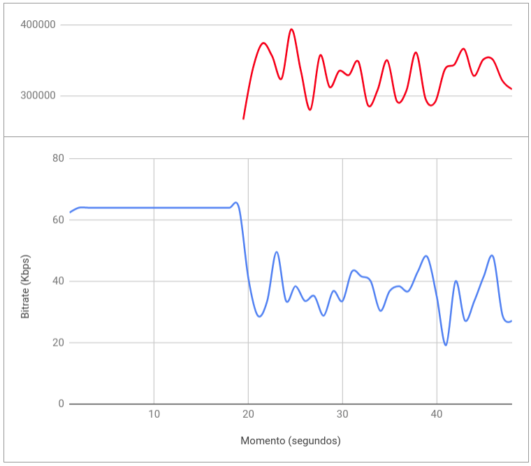Cenário 3: Aprovisionamento de serviço para comunicação de VoIP
Experimento 1 - Com SONAr e com QoS.
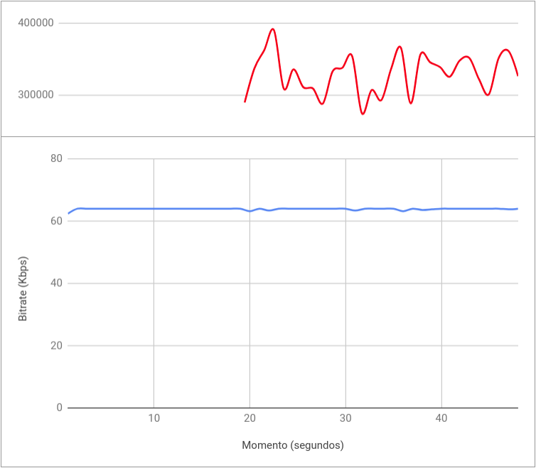7 - Conclusão
As Redes de Computadores são imprescindíveis para sociedade;
O Gerenciamento de Rede é um mecanismo fundamental para manter a rede operacional e prover serviços;
As Redes Futuras não poderão ser gerenciadas com as estratégias atuais;
A Computação Autônoma pode ser utilizada para a concepção de Redes Auto-Gerenciáveis;
Serviços Comunicacionais podem ser definidos por intenções descritas ou detectadas;
O SONAr define uma Camada de Gerenciamento específica para os componentes de gerenciamento;
As Entidades SONAr são capazes de prover propriedades de auto-organização para as Redes de Computadores;
Este trabalho demonstra que SONAr pode ser utilizado para automação das operações da propriedade de Self-Configuration;
Resultados Experimentais
Viabilidade da solução proposta pelo SONAr (Qualitativo);
Automação e otimização da operação de Inicialização da Rede (Qualitativo);
Uso do CPI adiciona um baixo overhead que é compensado pela melhoria no tempo gasto nas operações de inicialização e plug-and-play de dispositivos (Quantitativo);
Maior flexibilidade da rede para o aprovisionamento de serviços de comunicação (Qualitativo);
O uso da técnica de "Delayed Discovery" torna o processo de plug-and-play mais rápido (Quantitativo);
Configurar fluxos de controle em switches OpenFlow é mais eficiente quando começa-se dos nós mais distantes (Quantitativo);
As funções e componentes de rede abstraídos como contêineres (Docker) são mais fácilmente aprovisionadas e utilizam melhor os recursos disponíveis (Qualitativo).
Objetivos Alcançados
Modelo de Representação e Aprovisionamento de Intent-based Services - IBSM;
Framework para concepção de Redes Auto-Gerenciáveis - SONAr;
Levantamento de Requisitos Comunicaionais das aplicações atuais e utilização de uma estratégia de "building blocks";
Proposição de uma solução para a automação das operações de Self-Configuration;
Implementação de uma versão inicial do SONAr com suporte ao IBSM e foco em Self-Configuration;
Realização de Experimentos e comprovação de Resultados com ganhos Qualitativos e Quantitativos.
Publicações
Bootstrapping and Plug-and-Play Operations on Software Defined Networks: A Case Study on Self-Configuration Using the SONAr Architecture - CLOSER 2020
Network Self-Configuration for Edge Elements Using Self-Organizing Networks Architecture (SONAr) - CLOSER 2020
A self-healing platform for the control and management planes communication in softwarized and virtualized networks - CLOSER 2020
(Artigo a ser submetido para o IEEE TNSM)
Perspectivas Futuras
Evolução da solução proposta para outros tipos de redes;
Implementação de Entidades responsáveis por outras propriedades de auto-gerenciamento;
Adequação da solução para o atendimento de requisitos carrier-grade
Obrigado
Maurício Amaral Gonçalves
mauricioamaralg@gmail.com